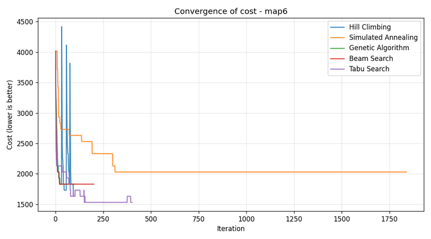
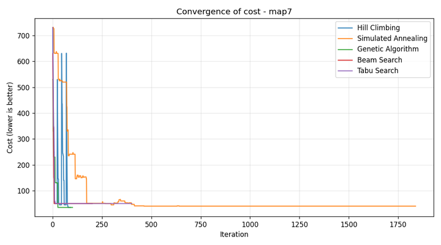
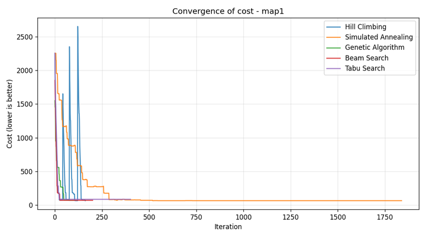

لینک ریپازیتوری گیت (پابلیک):
https://github.com/<USERNAME>/<REPO_NAME>
(لطفاً پیش از ارسال، این مقدار را با لینک واقعی ریپازیتوری خود جایگزین کنید.)
هدف پروژه، حل یک مسئلهی بهینهسازی در محیط Grid World است: چیدمان مجموعهای از سنسورها در یک نقشهی شطرنجی بهگونهای که بیشترین تعداد اهداف زیر پوشش قرار گیرد، سنسورها روی موانع یا خارج محیط قرار نگیرند، و تعداد سنسورهای مورد استفاده تا حد ممکن کم باشد. شعاع پوشش هر سنسور با فاصلهی منهتن سنجیده میشود (مطابق با تابع رندر پروژه).
این یک مسئلهی ترکیبی با فضای حالت گسسته و بزرگ است؛ بنابراین الگوریتمهای جستجوی محلی انتخاب طبیعی برای حل آن هستند. در این پروژه دو الگوریتم اجباری (Hill Climbing و Simulated Annealing) و سه الگوریتم امتیازی (Genetic Algorithm، Beam Search، Tabu Search) پیادهسازی و با یکدیگر مقایسه شدهاند.
کد پروژه روی اسکلت دادهشده توسط استاد بنا شده است. فقط در پوشهی search/ و فایل main.py تغییر/افزودن انجام شده است:
project/ ├─ main.py # نقطه ورود — اجرای الگوریتمها و نمایش نتایج ├─ utils.py # توابع نمایش/رسم (بدون تغییر) ├─ env/ # محیط GridWorld و رندر (بدون تغییر) └─ search/ ├─ local_search_base.py # کلاس پایه: evaluate / get_neighbor / initialize_state ├─ hill_climbing.py # الگوریتم Hill Climbing ├─ simulated_annealing.py # الگوریتم Simulated Annealing ├─ genetic_algorithm.py # امتیازی ├─ beam_search.py # امتیازی └─ tabu_search.py # امتیازی
تابع هزینهی پیادهسازیشده، یک ترکیب وزندار از سه عبارت است (در فایل local_search_base.py):
cost(state) = W_UNCOVERED * (#uncovered targets)
+ W_SENSOR * (#sensors used)
+ W_OVERLAP * (extra coverers beyond the first per target)
W_UNCOVERED = 100
W_SENSOR = 5
W_OVERLAP = 1
منطق انتخاب وزنها:
چون «هزینهی کمتر = بهتر»، الگوریتمها همگی بهصورت minimization پیاده شدهاند.
صورت پروژه بهصراحت میخواهد که هر سه عملیات move، add و remove در تولید همسایه پشتیبانی شوند. این عملیاتها در کلاس پایه پیادهسازی شدهاند:
max_sensors رعایت شود.
احتمال انتخاب هر عملیات: move با وزن ۳، add و remove هرکدام با وزن ۱.
دلیل این انتخاب آن است که وقتی تعداد سنسورها تقریباً درست باشد، عمدهی پیشرفتهای ممکن از طریق جابهجا کردن سنسورهای موجود به دست میآیند نه از طریق تغییر اندازهی state.
بهعلاوه، در حالاتی که اندازهی state به مرز ظرفیت رسیده باشد، عملیات نامعتبر بهطور خودکار از فهرست انتخاب حذف میشود.
این طراحی فضای جستجو را پویا میکند — یعنی تعداد سنسورها در طول اجرا تغییر میکند — و این دقیقاً همان رفتاری است که پروژه برای مدیریت بهینهی trade-off کیفیت پوشش و مصرف منابع از ما خواسته است.
پیادهسازی این الگوریتم در فایل search/hill_climbing.py از نوع steepest-ascent تصادفی با دو افزونه است:
max_sideways=10 گام به آن منتقل میشویم تا plateaهای صاف (که در این مسئله بسیار رایجاند، چون هزینهها گسسته هستند) رد شوند.max_restarts=3 بار از یک حالت تصادفی جدید شروع میکنیم، در حالی که بهترین حالت دیدهشده تاکنون را نگه میداریم.این دو افزونه ضعف اصلی Hill Climbing پایه — یعنی گیر کردن در local optimum — را تا حد قابل توجهی کاهش میدهند، بدون اینکه ماهیت «بهترین همسایه را بگیر» الگوریتم تغییر کند.
پیادهسازی استاندارد با کوولینگ نمایی (در فایل search/simulated_annealing.py):
T_{t+1} = T_t * alpha, alpha = 0.995
P(accept worse) = exp(-delta / T)
T_start = 10.0, T_min = 1e-3, max_iter = 2000
در ابتدای اجرا (دمای بالا) تقریباً هر همسایهای حتی اگر بدتر باشد قبول میشود، که اکتشاف وسیع فضای حالت را ممکن میکند. بهمرور دما پایین میآید و فقط بهبودها قبول میشوند — یعنی الگوریتم بهتدریج از exploration به exploitation منتقل میشود. این رفتار کلاسیک SA دلیل اصلی توانایی آن در عبور از local optimumهایی است که Hill Climbing در آنها گیر میکند.
پارامترهای حساس:
هر فرد یک لیست از مختصات سنسورهاست. اپراتورها:
tournament selection با اندازهی ۳،
uniform crossover روی اجتماع مجموعههای سنسورِ دو والد با اندازهی فرزند بهصورت تصادفی بین دو والد،
mutation با احتمال ۰٫۳ که خودِ همان get_neighbor کلاس پایه را فراخوانی میکند (سازگاری اپراتورها)،
و elitism با ۲ نخبه در هر نسل.
بهجای یک نقطهی فعلی، beam_width حالت موازی نگه میداریم. در هر دور، هر حالت تعدادی همسایه میسازد، همه با هم در یک استخر جمع میشوند، و beam_width حالتِ کمهزینهتر برای دور بعد انتخاب میشوند. خود beam فعلی هم در رقابت میماند (نوعی elitism) که تضمین کند روند هرگز بدتر نمیشود.
در هر گام، بهترین همسایهی غیرتابو انتخاب میشود — حتی اگر بدتر از حالت فعلی باشد —
و سپس حالت فعلی به فهرست تابو (deque با طول حداکثر tabu_tenure=20) اضافه میشود تا برای مدتی نتوانیم به آن برگردیم.
اگر یک حرکت تابو منجر به بهبود بهترین جواب کل اجرا شود، با معیار aspiration اجازهی انجام پیدا میکند.
این مکانیزم در عمل بسیار مؤثرتر از سایدوِیمووز Hill Climbing در فرار از local optima است (به نتایج بخش ۸ نگاه کنید).
هر الگوریتم در ۳ seed مستقل روی هر نقشه اجرا شد. در همهی اجراها، حالت اولیهی یکسانی استفاده میشود تا مقایسهی منصفانه برقرار باشد. معیارها: میانگین هزینهی نهایی (کمتر بهتر است)، بهترین هزینهی دیدهشده، درصد پوشش (نسبت اهداف تحتنظر به کل اهداف)، و میانگین تعداد سنسورهای استفادهشده.
| نقشه | الگوریتم | میانگین هزینه | بهترین هزینه | پوشش (٪) | تعداد سنسور |
|---|---|---|---|---|---|
| map1 (۳۱ هدف، شعاع ۲، سقف ۲۰) |
Hill Climbing | ۷۳٫۳ | ۷۰٫۰ | ۱۰۰٫۰ | ۱۴٫۷ |
| Simulated Annealing | ۷۱٫۷ | ۷۰٫۰ | ۱۰۰٫۰ | ۱۴٫۳ | |
| Genetic Algorithm | ۱۴۱٫۷ | ۷۱٫۰ | ۹۷٫۸ | ۱۴٫۷ | |
| Beam Search | ۷۸٫۳ | ۷۵٫۰ | ۱۰۰٫۰ | ۱۵٫۷ | |
| Tabu Search | ۷۳٫۳ | ۶۵٫۰ | ۱۰۰٫۰ | ۱۴٫۷ | |
| map3 (۴۰ هدف، شعاع ۳، سقف ۵) |
Hill Climbing | ۲۶۰٫۰ | ۲۲۷٫۰ | ۹۴٫۲ | ۵٫۰ |
| Simulated Annealing | ۴۵۹٫۷ | ۳۲۶٫۰ | ۸۹٫۲ | ۵٫۰ | |
| Genetic Algorithm | ۲۲۷٫۰ | ۲۲۷٫۰ | ۹۵٫۰ | ۵٫۰ | |
| Beam Search | ۲۲۷٫۰ | ۲۲۷٫۰ | ۹۵٫۰ | ۵٫۰ | |
| Tabu Search | ۲۲۷٫۰ | ۲۲۷٫۰ | ۹۵٫۰ | ۵٫۰ | |
| map4 (۱۱ هدف، شعاع ۲، سقف ۴) |
Hill Climbing | ۲۲۰٫۰ | ۲۲۰٫۰ | ۸۱٫۸ | ۴٫۰ |
| Simulated Annealing | ۲۸۶٫۷ | ۲۲۰٫۰ | ۷۵٫۸ | ۴٫۰ | |
| Genetic Algorithm | ۲۲۰٫۰ | ۲۲۰٫۰ | ۸۱٫۸ | ۴٫۰ | |
| Beam Search | ۲۲۰٫۰ | ۲۲۰٫۰ | ۸۱٫۸ | ۴٫۰ | |
| Tabu Search | ۲۵۳٫۳ | ۲۲۰٫۰ | ۷۸٫۸ | ۴٫۰ | |
| map6 (۵۳ هدف، شعاع ۴، سقف ۶) |
Hill Climbing | ۱۸۳۰٫۰ | ۱۷۳۰٫۰ | ۶۶٫۰ | ۶٫۰ |
| Simulated Annealing | ۱۹۹۷٫۰ | ۱۸۳۰٫۰ | ۶۲٫۹ | ۶٫۰ | |
| Genetic Algorithm | ۱۷۹۷٫۳ | ۱۶۳۰٫۰ | ۶۶٫۷ | ۶٫۰ | |
| Beam Search | ۱۷۹۷٫۰ | ۱۷۳۰٫۰ | ۶۶٫۷ | ۶٫۰ | |
| Tabu Search | ۱۵۹۷٫۰ | ۱۵۳۱٫۰ | ۷۰٫۴ | ۶٫۰ | |
| map7 (۱۲ هدف، شعاع ۵، سقف ۱۲) |
Hill Climbing | ۴۵٫۰ | ۴۰٫۰ | ۱۰۰٫۰ | ۹٫۰ |
| Simulated Annealing | ۳۶٫۷ | ۳۵٫۰ | ۱۰۰٫۰ | ۷٫۳ | |
| Genetic Algorithm | ۴۰٫۰ | ۴۰٫۰ | ۱۰۰٫۰ | ۸٫۰ | |
| Beam Search | ۴۵٫۰ | ۴۵٫۰ | ۱۰۰٫۰ | ۹٫۰ | |
| Tabu Search | ۵۱٫۷ | ۴۵٫۰ | ۱۰۰٫۰ | ۱۰٫۳ |
جدول ۱. خلاصهی نتایج تجربی روی ۵ نقشه. ردیفهای هایلایتشده، بهترین الگوریتم آن نقشه را نشان میدهند.



این مسئله در نقشههای با سقف سنسور تنگ (مثل map4: فقط ۴ سنسور برای ۱۱ هدف) خیلی شدید است. الگوریتم میتواند بهسادگی در چیدمانی گیر کند که چند هدف را پوشش میدهد ولی بهجای پوشش گروه دیگری از اهداف، روی همان گروه فعلی متمرکز میماند. راهکارهای ما برای این مشکل:
طراحی همسایگی، در عمل مهمترین ابزار ما برای مدیریت trade-off کیفیت/مصرف است. آزمایشهای اضافی نشان داد:
move را داشته باشیم: الگوریتم به اندازهی state اولیه گیر میکند و هرگز نمیتواند تعداد سنسور را کم/زیاد کند — یعنی trade-off اصلاً مدیریت نمیشود.remove را حذف کنیم: نتایج روی map7 هرگز به ۷ یا ۸ سنسور نمیرسند و همگی روی ۹ یا بیشتر متوقف میشوند (مقایسه با SA که به ۷٫۳ رسید).add را حذف کنیم: اگر initialize_state با تعداد کمی سنسور شروع کند، الگوریتم هرگز پوشش کامل را به دست نمیآورد.پس هر سه عملیات لازم و همافزا هستند.
cd project pip install -r reqirements.txt # شامل pygame, numpy, matplotlib python main.py # اجرای هر ۵ الگوریتم روی map1
برای تست روی نقشههای دیگر، در فایل main.py آرگومان GridWorld("map1") را تغییر دهید.
در این پروژه پنج الگوریتم جستجوی محلی روی مسئلهی جانمایی سنسورها پیادهسازی و مقایسه شدند. نتایج تجربی نشان میدهد که:
add/remove — بهاندازهی خود الگوریتم در کیفیت جواب نهایی مؤثر است.